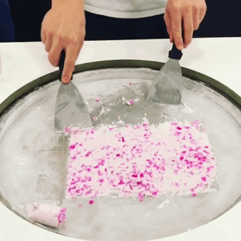
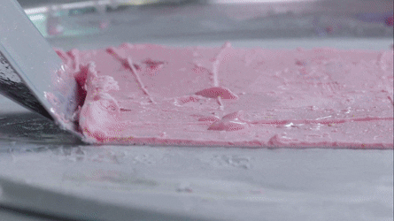
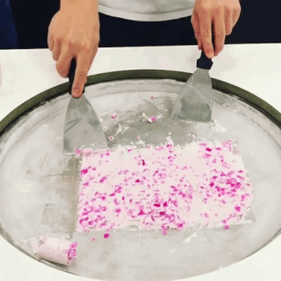
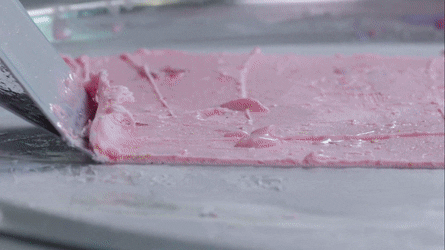

I-Tim-Pad is a dessert that originated in Thailand (Ferrier). It was invented in 2009 (Rollzicecream). The name translates to stir-fried ice cream due to the way it is made, and is also known as rolled ice cream.


 


